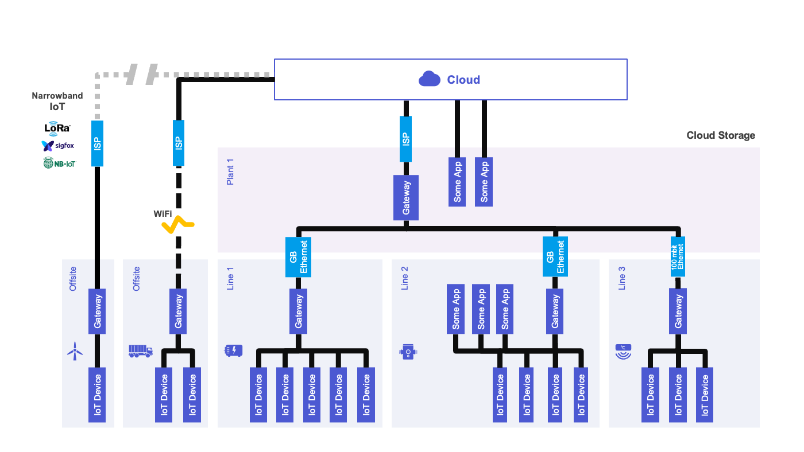
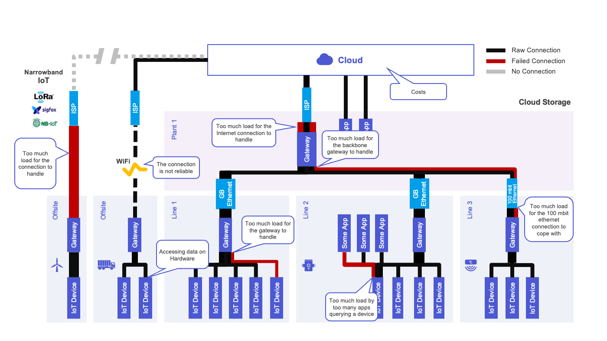
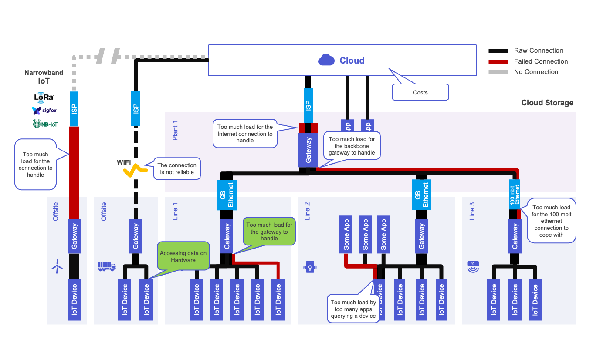
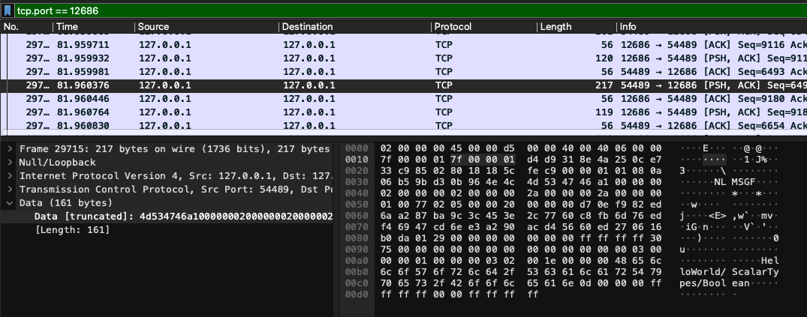
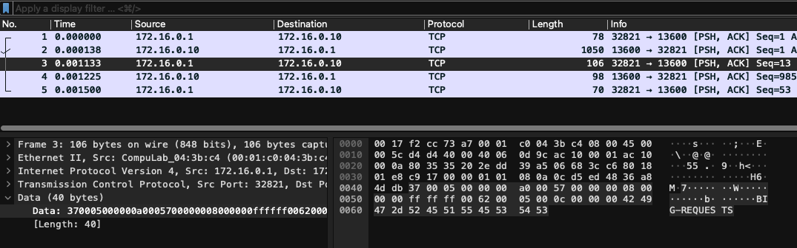
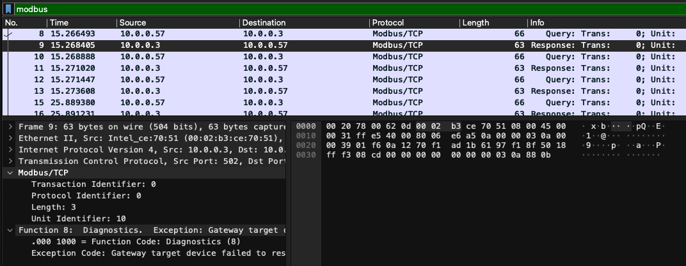
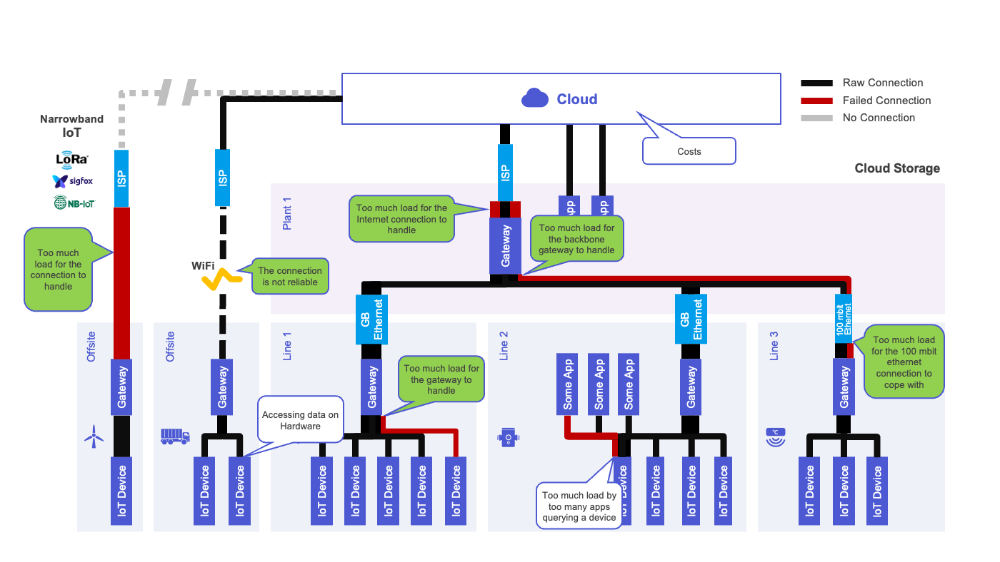
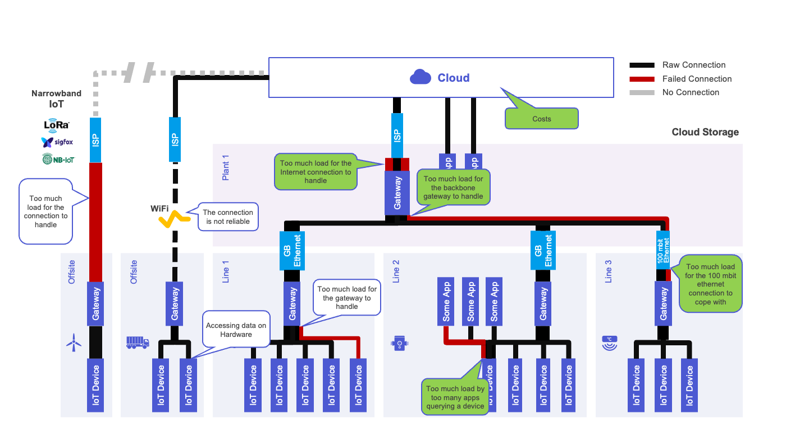
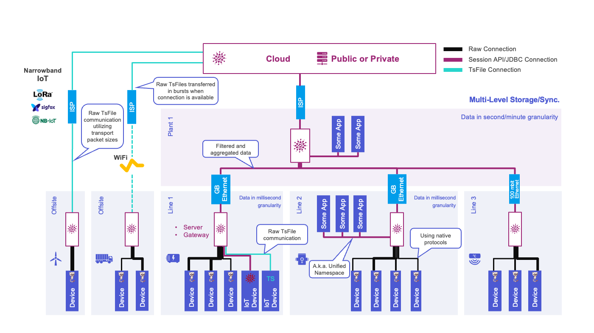

Magic industrial data acquisition with Apache PLC4X, TsFile and IoTDB
Christofer Dutz, Timecho
Magic industrial data acquisition with Apache PLC4X, TsFile and IoTDB
Christofer Dutz, Timecho
Community over Code NA
09.10.2024
(Image from Wikipedia under CC)
Slides made with:
Incubating project
Written in Asciidoctor
For sharing training material
Slides will be available there
Typical data acquisition szenarios
Problems with these szenarios
Solving problems with:
Apache PLC4X
Apache TsFile
Apache IoTDB
Putting it all together



Unified protocol adapter
Native protocol communication
About 19 protocols currently
Shared API over all protocols
Available in multiple languages
Java, Go, C, C#, Python (Rust)



Using native protocols of PLCs reduces:
Size of packets
Load on the network
Load on the Hardware (both sides)
Costs, as no retrofit is required

Storage format for IoT-data
Aggregated data
Highly compressed data
Available in multiple languages
Storage technology of Apache IoTDB
Collecting data ON the devices
Push instead of Pull
Bonus: Cycle-Synchronous data
Aggregating data on gateways
Utilizing NB IoT bandwidth 100%
Buffering if no connection

Acting as data-hub
Unified Namespace
Streaming queries
Apps subscribe to DB
Aggregation
Compression
Replication
Different retention on every level/device
Apache IoTDB / TimechoDB won first place in any dimension in any benchmark it competed in
benchAnt
TPCx-IoT

Using TsFile-Embedded on Hardware
PLC libraries
No Gateways needed
Forward data via MQTT
Gateways using:
TsFile to store aggregated & compressed data
PLC4X to collect data using native protocols
Forward data to IoTDB servers using Session-API or MQTT
Servers based on Apache IoTDB:
Acting as central data-hub for applications (Unified Namespace)
Applications subscribe to changes (Push vs Pull)
Automatically replicating to higher levels
Automatic aggregation to higher levels
Questions?
Suggestions?
Wanna join in on the fun?
Contact me on LinkedIn:
linkedin.com/in/christofer-dutz/